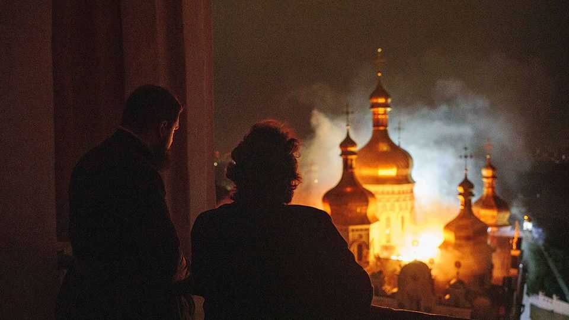

The terrifying new air war in Ukraine
Russia is dominating the missile war by default, but Ukraine hopes that will change
June 18th 2026

Ukrainians awoke on Monday to a familiar stench of kerosene, fire and blood. Russia’s latest attack, involving 611 drones and 70 missiles, focused on Kyiv. The capital’s ancient Pechersk Lavra monastery complex, a unesco World Heritage site, was hit by what local authorities described as a direct strike. Elsewhere the primary targets appeared to be military-production facilities and power infrastructure, but as usual some missiles landed in bedrooms. Eight residential blocks were hit. In Kyiv at least five people died and three dozen were injured. In Kharkiv, at least five emergency workers were killed in a deliberate “double-tap” strike. The deaths continue a grim trend: May was the deadliest month for Ukrainian civilians since 2022.
The intensifying air war is in part a reflection of Russia’s increasing difficulties on the ground. Since late 2025 Ukraine’s drone-fronted forces have been killing and seriously wounding Russian soldiers faster than the Kremlin can recruit them, slowing their advance to a crawl or, in some cases, even slightly reversing it. The near-stalemate is causing the war’s centre of gravity to shift from the trenches and towards the factories and supply lines behind it. Each side is responding using the tools it has.
Ukraine has prioritised an asymmetric mid-range drone campaign, menacing Russian supply routes with new precision weapons, the latest of them semi-automated. Among other things, this has caused a petrol shortage in annexed Crimea. Russia, for its part, has simply bombed Ukrainian cities harder and more ruthlessly. Its aims are not only military but psychological: to break locals’ morale, and foreign allies’ confidence that Ukraine can defend itself. In late May Russia’s foreign ministry urged diplomats to leave Kyiv. So far, none have.
For Ukraine’s air-defence operatives, nights like these are increasingly frantic. At the worst moments the waves of incoming drones and missiles turn their radar monitors into a sea of red dots. “It’s like being a goalkeeper facing ten balls at once,” says one officer. “You’ve only got two arms and two feet and you don’t understand how you will get through it.” Given that, the performance remains solid. On an average night Ukraine intercepts more than 90 % of the drones and cruise missiles launched at it. Interceptor drones, which are mainly domestically produced, are blunting attacks by record numbers of Shahed drones, often several hundred strong. But a shortage of anti-ballistic interceptors has made it a losing fight against ballistic missiles, which move much faster. In the most recent attacks roughly two-thirds got through.
Of the systems available to Ukraine, only the American-manufactured Patriot reliably intercepts ballistic missiles. In three years Ukraine has fundamentally changed how the systems are used. Launchers now fire and move before Russia can find them; batteries run on fewer launchers, and mobile crews have “ambushed” Russian planes that thought they were farther away. The Pentagon has even assigned a team to Ukraine to watch how they are doing it. But a shortage of interceptors forces crews to make difficult decisions about what to target and what to let through. Since the Iran war started America and its Gulf allies have burned through stocks of Patriots at a dizzying rate, exacerbating an already acute global shortage. New manufacturing lines are not expected to yield significant results for years. Fire Point, a Ukrainian start-up with a reputation for over-promising, says it is developing a new anti-ballistic missile. Few insiders believe it will work in the near term.
Russia is using the window to press its overwhelming missile superiority. Ukraine’s missile-engineering school was largely dismantled after the fall of the Soviet Union, at Russia’s and America’s behest. The Kremlin, in contrast, kept working on its catalogue of designs and its working production lines. This year Ukrainian military intelligence estimates Russia will produce roughly 700 Iskander ground-launched ballistic missiles, alongside 60 Kinzhal aeroballistic missiles, which are launched from planes, and 30 Zircon hypersonic cruise missiles. Combined attacks on Kyiv have held roughly steady this year at about one per week, but ballistic and Zircon missiles make up a growing share of the mix.

Ukraine has made a virtue of its missile poverty by turning to mass attacks with simpler drones and cruise missiles. It has had success with long-range drone raids, hitting targets deep inside Russia. It embarrassed Vladimir Putin with hits on St Petersburg’s port during his annual economic showcase there in early June. But while gaps in Russian air defence offer ever more opportunities, the mass operations remain wildly inefficient. Only a small minority get through, mainly the fastest weapons (over 350kph). Success rates range from 2% to 35%, depending on the model. Ukraine desperately wants to return to the select group of states that can mass-produce ballistic and advanced cruise missiles, which are harder to intercept and more destructive on impact.
It has at least two ballistic missiles in testing phase. The Sapsan/Hrim-2, developed by Pivdenmash, the Soviet-era centre of Ukrainian rocket-making, has been in development for decades but has been undermined by corruption and Russian infiltration. The fp-7, a smaller, shorter-range project from Fire Point, combines new Western avionics with an existing Soviet airframe design. The latter is probably closer to serial production.
But producing enough missiles that can beat Russian defences is not straightforward. Rockets are far more complicated than drones, requiring precision in everything from engines to terminal-guidance avionics. Making something fly a long distance is one thing; making it hit the target even harder. Financing serial production might be the most difficult part. “You can’t make spades today and rockets tomorrow,” says Andriy Ryzhenko, a former deputy chief of staff of the Ukrainian navy. “Ukraine does have a rocket school, just, but our technology has been frozen for 40 years.”
How close Ukraine is depends on whom you ask. Volodymyr Zelensky, in an interview with British media, insisted Ukraine was “very close” to bringing the ballistic war to the Kremlin. If so, the war could take a new shape. Long-range Ukrainian missiles could threaten Russia’s military industry and logistics, and deter Russia from hitting Ukrainian cities indiscriminately. But an experienced player in the arms industry (whose drones were among those that reached St Petersburg) urges realistic expectations. “The best we can hope for is an ersatz missile,” he says―ie, one cobbled together from Western spare parts. A senior official played down hopes of a Russian-style “missile conveyor belt“ any time soon.
The near-term risk is that Russia will escalate. It could use even more destructive weapons, or target Ukraine’s government and citizens with no pretence of restraint. Ukraine is bracing for a new generation of jet-powered Shahed drones, built with Chinese engines, that are expected to make up 80% of the fleet from October. The new drones fly too fast for current interceptor drones, and will make it much harder for Ukraine’s air defenders. Ukraine’s great cities face still more destruction. History suggests that will not break the country’s resolve. But it can make life miserable indeed. ■
To stay on top of the biggest European stories, sign up to Café Europa, our weekly subscriber-only newsletter.